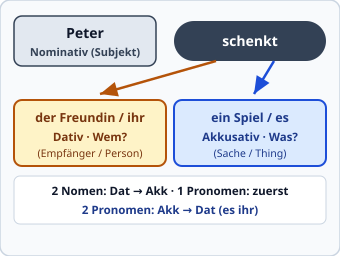

Dativ- und Akkusativobjekt
Mit einem KI-Tutor lernen
Ein KI-Tutor erklärt dir diese Seite und hilft dir bei den Aufgaben. Wähl deinen Assistenten:
Mit Claude öffnen Mit ChatGPT öffnen Mit Mistral Vibe öffnen
Du nutzt dein eigenes Konto beim Anbieter. Der Assistent ist kein Angebot von lernapps.net: lernapps liefert nur Inhalte und Aufgaben. Die Wahl gilt für alle Seiten, nur auf diesem Gerät.
Empfänger + Sache: Das Pfeildiagramm
Verben wie geben, schenken, zeigen, bringen, leihen, schreiben brauchen oft zwei Objekte: den Empfänger im Dativ (Wem?) und die Sache im Akkusativ (Was?). Die Reihenfolge hängt davon ab, ob du Nomen oder Pronomen benutzt.

© CC-BY-SA-4.0Drei klare Reihenfolge-Regeln für Sätze mit Dativ- und Akkusativobjekt.
| Kombination | Reihenfolge | Beispiel |
|---|---|---|
| 2 Nomen | Dativ → Akkusativ | Peter schenkt der Schwester ein Buch. |
| 1 Pronomen + 1 Nomen | Pronomen zuerst | Peter schenkt ihr ein Buch. / Peter schenkt es Mina. |
| 2 Pronomen | Akkusativ → Dativ | Peter schenkt es ihr. |
Übung
Aufgabe
Lösung
Richtige Antwort: 1. Peter, 2. leiht, 3. dem Bruder, 4. das Fahrrad.
Bei zwei Nomen steht der Dativ (*dem Bruder*) vor dem Akkusativ (*das Fahrrad*).
Aufgabe
Wähle die richtige Objekt-Reihenfolge mit Pronomen.
- Peter gives it (das Buch) to her (Mina). → Peter gibt ….
- Lukas shows it (den Ball) to Peter. → Lukas zeigt ….
- Nadia writes him (Lukas) a card. → Nadia schreibt ….
Lösung
- Peter gibt es ihr.
- Lukas zeigt ihn Peter.
- Nadia schreibt ihm eine Karte.
Ein Pronomen steht vor dem Nomen (ihn Peter, ihm eine Karte). Bei zwei Pronomen steht Akkusativ vor Dativ (es ihr).
Fehler gefunden oder eine Idee für diese App?